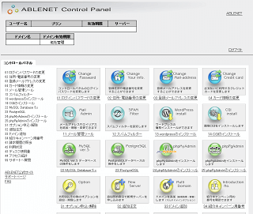
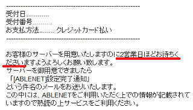
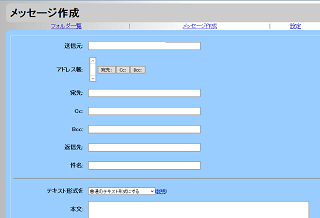

ABLENET（エイブルネット）のレンタルサーバー
ABLENET（エイブルネット）のレンタルサーバーは、設立が1998年2月となっており、2021年で23周年目を迎える老舗のホスティングサービスです。
→ ABLENET
国内データセンターで稼働率が99.9%以上あり、バックボーンは大手４社の通信会社に接続しているため、格安サーバーではあるものの、法人でも安心して利用することができます。
老舗サービスのため、管理画面は全体的に古風な印象がありますが、日本語対応のコントロールパネルで初心者でもわかりやすいです。

エイブルネットの料金プランを比較
ABLENETには一般的な「共有レンタルサーバー」と「VPS」の2種類がありますが、共有レンタルサーバーのプランには以下の４種類があります。
■共有サーバーのプラン一覧
- プチプラン １年契約で月額換算275円（税込）～
- パーソナルスイートプラン 月額917円（税込）～
- ソーホースイートプラン 月額1,834円（税込）～
- ビジネススイートプラン 月額2,750円（税込）～
初期費用については半額キャンペーンをやっているケースも多いため、チェックしてからご契約されることをおすすめします。
このなかで月額換算275円の「プチプラン」が格安で魅力的ですが、プチプランではMySQLやマルチドメインが非対応となっており、また.htaccessについてもアクセス制限のみしか利用できないため、「パーソナルスイート」以上がおすすめです。
契約後に送られてくるメールには、サーバーの用意で2営業日ほどかかるとの記載がありますので、時間に余裕をもって申し込みされるとよいでしょう。

（※当サイト運営者の場合、実際には翌日の利用開始となりました。）
■マルチドメイン対応
マルチドメインについてはオプションとなっており、ドメイン１個追加につき、初回のみ税込2,200円の設定費用がかかりますが、それ以降は更新費用なしで利用することができます。
ただし、プチプランではマルチドメインのオプション自体が非対応となっており、またパーソナルプランで10個、ソーホープランで30個までの制限があります。一方、ビジネスプランでは無制限で利用できます。
■独自ドメイン型の共有SSL
SSLについては共有SSLになっており、公式サイトに以下の記述があります。
共用SSLは一つの証明書を複数の利用者で共用して使用します。データの暗号化などSSLの性能はそのままに、独自認証型SSLよりも簡単に手軽な価格帯でSSLをご利用いただけます。 但し、独自認証型SSLのように「お客様のサイトの実在証明」としてはご利用頂けません。（弊社サービスでは「独自認証型SSL」はご利用いただけません 。）
当サイト運営者はほぼ独自SSLしか使用したことがないため、この共有SSLについては使用していませんが、共有SSLでも「独自ドメイン型の共用SSL」を利用できるようです。独自ドメインをSSL化できるため、何ら問題ないかと思いますが、月額1,320円（税込）かかります。
格安プランの「プチプラン」をレビュー
気になるのは月額換算275円から利用できる格安の「プチプラン」かと思いますが、こちらは基本的な機能は利用できるものの、データベースのMySQLが利用できないため、WordPressなどのCMSでホームページを作成する場合にはパーソナルスイート以上がおすすめです。
「プチプラン」の場合、上記のようにマルチドメインには非対応となっており、.htaccessについても「アクセス制限(BASIC認証)」のみが使用可能なため、.htaccessで転送設定などもしたい方には少し物足りなさが感じられるかもしれません。
また、この「プチプラン」ではアフィリエイトは利用可能なものの、商用利用は不可となっています。一方、上位プランの「パーソナル」、「SOHO」、「ビジネス」では、商用利用とアフィリエイト共に利用可能です。
ちなみに、現在のところ、無料の独自SSLについては対応していないようです。独自ドメイン型の共有SSLについては月額1,320円（税込）で利用できます。
プチプランの特徴
- データベース（MySQL）非対応（※CMSが利用できない）
- マルチドメイン非対応
- .htaccessはアクセス制限のみ
- 独自ドメイン型の共用SSLはオプションにて利用可能
- 上位プランへの変更は変更手数料と差額が必要
- 商用不可（※アフィリエイトサイトは利用可能）
けれども、当サイトでご紹介しているような、ホームページ作成ソフトなどを使用して、FTP接続でサイトを作成するには問題なく利用することができます。
このプチプランから上位プランへ変更する場合、差額を支払うことでアップグレードすることはできますが、変更手数料が1,100円（税込）必要になりますので、CMSやマルチドメインを利用される方はパーソナルスイートプラン以上で利用されるとよいでしょう。
■メールソフトとアクセス解析
ウェブ上で直接編集できる「ファイルマネージャー」は見当たりませんでしたが、ウェブメールは利用できました。

また、1日前～7日前までの「生ログ」のダウンロードも可能となっており、Webalizerによるアクセス解析なども利用することができます。
ABLENETは老舗レンタルサーバーのため、全体的に古風な印象はあるものの、稼働率が99.9％以上あるため、法人サイトでも安心して利用することができます。
また、バックボーンもトータル220Gbps以上があるので、動画や音楽をメインのコンテンツにしているホームページでも利用しやすいかと思います。
個人向け格安レンタルサーバー
- エックスサーバー （高機能・人気・おすすめ・無料SSL）
- さくらインターネット （格安・人気・老舗・無料SSL）
- お名前.comサーバー （GMOグループ・人気・無料SSL）
- ロリポップ！ （初心者向け・人気・格安・無料SSL）
- コアサーバー （高機能・上級者向け・無料SSL）
- ヘテムル （無料SSL）
- スターサーバー （格安・無料SSL）
- XREA （格安・老舗・無料SSL）
- グーペ （お店向け・無料SSL）
- ConoHa WING（コノハ ウィング） （高速・無料SSL）
- mixhost （LiteSpeed・成人向け可・無料SSL）
- カラフルボックス （LiteSpeed・cPanel・無料SSL）
- WebARENA（ウェブアリーナ） （格安・老舗・無料SSL）
- Z.comレンタルサーバー （高速・格安SSL）
- リトルサーバー （格安・無料SSL）
- ABLENET（エイブルネット） （格安・老舗）
- エクストリム （格安・無料SSL）
- JSNレンタルサーバー （格安・老舗・無料SSL）
- Fc2 lite （格安・無料SSL）
- マイサーバー1000 （無料SSL）
- クイッカ （IP分散・cPanel）
- ドメインキング （Plesk）
- ＠ＷＡＰＰＹ （格安・Plesk）
- ハッスル （格安）